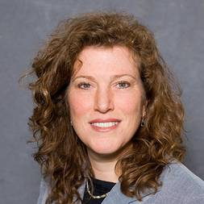

ECOG-ACRIN Cancer Research Group - SUPPORT Toolkit PNs
Our site in ECOG-ACRIN Cancer Research Group will leverage the collective resources of the EA, our team's decades of work on improving diversity in clinical trials, and our foundational work in patient navigation and CT research literacy tools to create and evaluate an ECOG-ACRIN Trial SUPPORT Toolkit (SUPPORT intervention) that aims to improve Black and Latino referral and enrollment in active NCI-supported therapeutic trials in head and neck, thoracic, and genitourinary cancers, as well as leukemia and myeloma.
Our goals include:
(1)Conduct preliminary assessments and refine the EA SUPPORT intervention with focus on community representation and input
(2)Conduct a Hybrid Type 1 cluster-randomized, roll-out effectiveness-implementation trial in 10 NCORP community oncology practice sites (with N= 500 Black and Latino patients with cancer) to evaluate the effectiveness of the EA SUPPORT intervention in improving Black and Latino patient referral and enrollment to NCI-supported CTs (primary outcomes) and participant and provider awareness and knowledge of CTs (secondary outcomes) while assessing implementation factors
(3)With the CUSP2CT Data, Evaluation, and Coordinating Center, conduct final site evaluation and disseminate the SUPPORT intervention to NCORP community oncology sites, research bases, and affiliated trial networks
Principal Investigators
Dr. Melissa A Simon
Dr. Melissa A Simon's primary research interests are aimed at promoting health equity and eliminating health disparities among low income, medically underserved women across the lifespan. Integrating health services research with social epidemiologic models, Dr. Simon's research focuses on interventions (such as patient navigation and community health outreach workers) that aim to reduce and eliminate such disparities. Within this context, Dr. Simon prefers to leverage culture and community to achieve these goals and thereby integrates community based participatory research framework into her work. She also has a strong portfolio of workforce development programs including the world's first healthcare pipeline development free massive open online course, "Career 911: Your Future Job in Medicine and Healthcare" on the Coursera platform. She is the founding director of the Center for Health Equity Transformation and the Chicago Cancer Health Equity Collaborative. She is a former member of the US Preventive Services Task Force (USPSTF). She is a member of the National Academy of Medicine (NAM) and the Association of American Physicians (AAP). She currently is a member of the NAM Board on Population Health and Public Health Practice and the Roundtable for the Promotion of Health Equity. She also serves as an Advisory Committee member to the NIH Office of Research on Women's Health.
Dr. Elyse Park
 Dr. Elyse Park is clinical health psychologist and health services researcher who focuses on understanding and improving health-related behaviors and quality of life functioning across the continuum of patients at risk for cancer through to cancer survivors. Clinically, she treats cancer survivors at the MGH Behavioral Medicine Clinic. An Associate Professor in Psychiatry at Mass General Hospital in Boston, her research is conducted at the Health Policy Research Center. She has dual leadership roles directing the behavioral science research at the MGH Cancer Center's Survivorship Program and the MGH Tobacco Research & Treatment Center. She directs the MGH Division of Clinical Research's Qualitative Unit and has extensive mixed methods research experience, developing interventions and surveys. She also has extensive experience developing smoking cessation counseling interventions for patients at risk for cancer, cancer patients, and cancer survivors, as well as delivering telehealth motivational interventions. She is the PI of a multisite study integrating tobacco treatment into the care of newly diagnosed patients, and she just received funding to conduct an R01 trial to implement this treatment into the care of patients at NCI-affiliated community cancer centers. She is a recipient of a National Cancer Institute K24 mentoring award, which focuses on integration and dissemination of tobacco treatment interventions into clinical care. She is MPI of an NCI-funded trial to integrate tobacco treatment into lung screening across Partners.